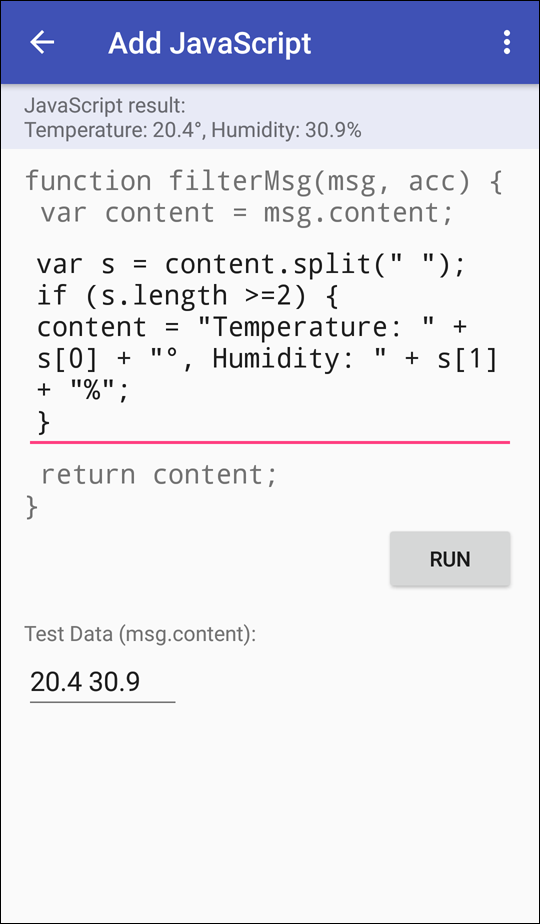
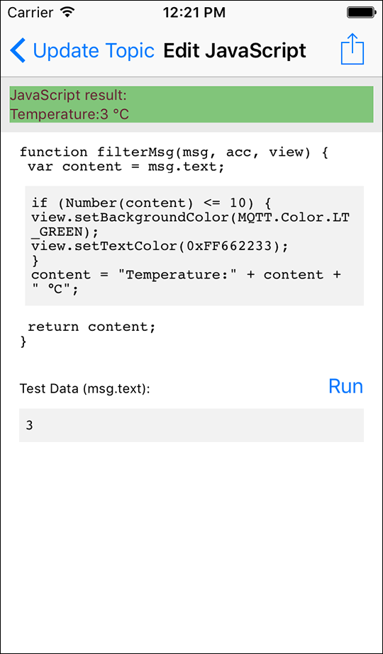

Standardmäßig werden MQTT-Push-Benachrichtigungen über empfangene MQTT-Daten direkt im Fenster „Messages“, das für einfache Textnachrichten geeignet ist, angezeigt. MQTT-Benachrichtigungen können allerdings auch binär, XML, JSON oder anderweitig kodiert sein. Hier bieten JavaScript-basierte Filterskripte die Möglichkeit, die Benachrichtigungen zu analysieren und zu formatieren, um die gewünschten Daten in Form einer Textnachricht darzustellen.


Die Filterskripte können per Texteingabe oder Copy/Paste übernommen werden. Zusätzlich werden sie auf dem Server gespeichert, damit alle Mobilgeräte eines Kontos den identischen Inhalt anzeigen. Die Ausführung der Filterskripte erfolgt auf dem Mobilgerät während der Anzeige. Es besteht die Möglichkeit, erfasste Skripte vorab zu testen. Alternativ kann ein JavaScript in einem Webbrowser entwickelt bzw. getestet und übernommen werden.
Implementieren Sie die Funktion filterMsg() um Nachrichten zu filtern. Die Originalnachricht ist im Parameter „msg.text“ enthalten, welcher der Variablen „content“ zugewiesen wird.
Die Variable „content“ wird an das aufrufende Programm zurückgegeben und bestimmt den darzustellenden Inhalt.
Wichtig:
Der Inhalt von „content“ muss vom Typ string sein, d. h.
Sie müssen gegebenenfalls numerische Werte konvertieren. Vermeiden Sie
komplexen Code sowie Aktionen, die nicht dem Filtern der Nachricht dienen.
Das Resultat des Testlaufs wird in der Statuszeile des Editors angezeigt.
Sollten Sie bereits Nachrichten für Ihr Topic erhalten haben, wird dieses Feld zwar mit dem Wert der letzten Nachricht vorbelegt, kann aber überschrieben werden.
Folgende Beispiele zeigen, wie Daten aus Nachrichten mit unterschiedlichen
Strukturen extrahiert und aufbereitet werden. Die Beispiele können Sie auch
mit ( > Insert Example >
<Beispiele> > Insert Example >
<Beispiele>) in Ihren Code einfügen und anpassen:
> Insert Example >
<Beispiele> > Insert Example >
<Beispiele>) in Ihren Code einfügen und anpassen:
Variablen, auf die Sie in der Funktion filterMsg() Zugriff haben:
| Parameter | Erläuterung |
|---|---|
| msg.receivedDate | Zeitpunkt des Empfangs der Nachricht (JavaScript-Objekt Date) |
| msg.topic | Topic der Nachricht |
| msg.text | Nachrichteninhalt (Orginalnachricht interpretiert als UTF-8 String, nicht darstellbare Zeichen und ungültige Werte werden durch ein � ersetzt bzw. gekennzeichnet) |
| msg.raw | JavaScript ArrayBuffer-Objekt, das die Originalnachricht enthält |
| acc.user | MQTT-Benutzername |
| acc.mqttServer | MQTT-Server |
| acc.pushServer | MQTT-Push-Server |